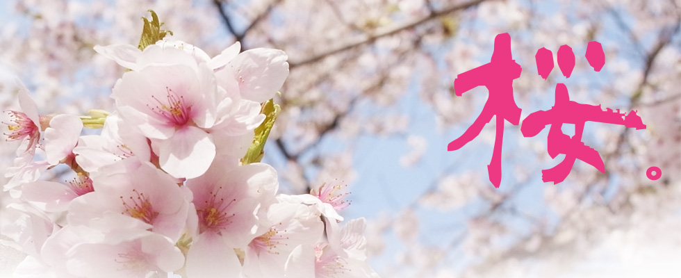
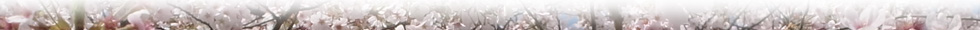

| 行程規劃 │ 花期時間 │ 訂房 │ 交通 | ||||||||
|  | ||||||||
清水寺清水寺是京都最古老的寺院，建於公元798年，相傳慈恩大師是唐僧在日的第一個弟子。現存清水寺為1633年重修。 金閣寺鹿苑寺，又名金閣寺,因為寺內核心建築「舍利殿」的外牆全是以金箔裝飾，所以又被暱稱為「金閣寺」。 哲學之道哲學之道（哲學の道）是日本城市京都左京區一條2公里長的溪邊小道，沿途種植櫻花樹。這條路的名稱來源於京都大學哲學教授西田幾多郎每日在此冥想。1972年正式命名。哲學之道經過好幾座寺廟和神社，例如慈照寺、法然院、永観堂禪林寺、南禪寺、熊野若王子神社。 造幣局主要業務範圍為硬幣製造、勛章等金屬工藝品的製造、礦物分析等。其本部位於大阪府大阪市北區天滿，在造幣局內還有造幣博物館。造幣局大阪本部和廣島支局內的櫻花非常有名，吸引不少人去觀賞。 |
||||||||
|
||||||||
|  | ||||||||